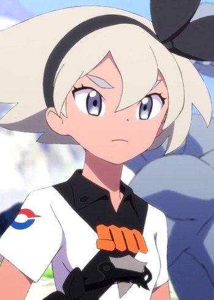

|
Aquarius |
- Fairy Tail
- Fairy Tail OVA
- Fairy Tail the Movie: Phoenix Priestess
- Fairy Tail (2014)
- Fairy Tail: Final Season
|
Aquarius is a long-haired mermaid. She is known as the Water Bearer. When she summoned, she is surround by a body of water. She is selfish and dislikes Lucy. |
|  |
Bea |
|
Bea is the Gym Leader of Stow-on-Side's Gym/Stadium. She specializes in Fighting-type Pokemon. She has a strong personality and ahe hates to lose. Bea is determine to drive her Pokemon to the extreme. However, she is not about admitting she has gone too far. She has a soft side for sweets. |
 |
Cana Alberona |
- Fairy Tail
- Fairy Tail OVA
- Fairy Tail the Movie: Phoenix Priestess
- Fairy Tail (2014)
- Fairy Tail OVA (2016)
- Fairy Tail: Final Season
|
Cana Alberona is a member of Fairy Tail guild. She uses a type of card magic that allows her to track people and fortune telling. She has a love of drinking alcohol. She has a pure heart and is one of leading figures of the Fairy Tail. |
 |
Eclipse Aquarius |
|
Eclispe Aquarius is the Eclipse form of Celestial Spirit Aquarius. Her true desire is to grant the rogue Celestial King more power by stealing life force from the 12 Zodiac Spirit. |
 |
Gray Fullbuster |
- Fairy Tail
- Fairy Tail OVA
- Fairy Tail (2014)
|
Gray Fullbuster is an ice magic mage of Fairy Tail. He stricts a lot of the time due to training when he was younger. He has an rivalry with Natsu ever since they where young. He has a laid - back personality. Eri Kitamura voices younger Gray Fullbuster. |
 |
Izumo Kamiki |
- Blue Exorcist
- Blue Exorcist: Kuro's Trip Away From Home
- Blue Exorcist Specials
- Blue Exorcist Movie
- Blue Exorcist: Kyoto Saga
- Blue Exorcist OVA
|
Izumo Kamiki is a top student at the Exorcism Cram School of True Cross Academy. She comes from a long line of shrine maidens. She is someone with a bad attitude who hates to lose. She is very cold, blunt, and condescending towards those around minus close ones. Izumo is somewhat mainpulative and is almost always frowning. Despite her cold nature, she shows true kindess and consideration towards others. She is open and even curious to Demons. At first, she will lost confidence but will stay and composed during battles. She is very self-conscious about her appearance. |
 |
Miki Aono |
- Fresh Pretty Cure!
- Pretty Cure All Stars Movie DX: Minna Tomodachi Kiseki no Zenin Daishuugou
- Fresh Pretty Cure! Movie: The Kingdom of Toys has Lots of Secrets!?
- Pretty Cure All Stars Movie DX2: Kibou no Hikari Rainbow Jewel o Mamore
- Pretty Cure All Stars Movie DX3: Reach the Future! The Rainbow Flower that Connects the World
- Pretty Cure All Stars New Stage: Future Friends
- Pretty Cure All Stars New Stage 2: Friends of the Heart
- Pretty Cure All Stars New Stage 3: Friends Forever
- Pretty Cure All Stars Movie: Spring Carnival
- Pretty Cure All Stars the Movie: Everyone Sing! Miraculous Magic
- Hugtto! Pretty Cure
- HUGtto! Pretty Cure Futari wa Pretty Cure: All Stars Memories
|
Miki Aono is a schoolgirl at Private Torigoe Academy for entertainment talents. She wants to be the top model. Miki is an elegant and mature girl who tries to keep her flawless and graceful side open at all times. she is naturally charming, and sometimes teases those she love, showing her humor side. Despite her outward perfectionist streak, she is very kind and modest. Her alter ego id Cure Berry. |
 |
Roxanne |
- Pokemon Omega Rudy and Alpha Sapphire: Mega Special Animation
|
Roxanne is a gym leader in the Hoenn region. She is an expert of rock-types Pokemon. She is not only a gym leader, she is a teacher as well. |
 |
Roxie |
|
Roxie is a gym leader in the Unova region. She is the Virbank City gym leader. She is a musician who plays the bass guitar. She is a powerful trainer. She is an expert of Poison-Type Pokemon. |


.jpg)